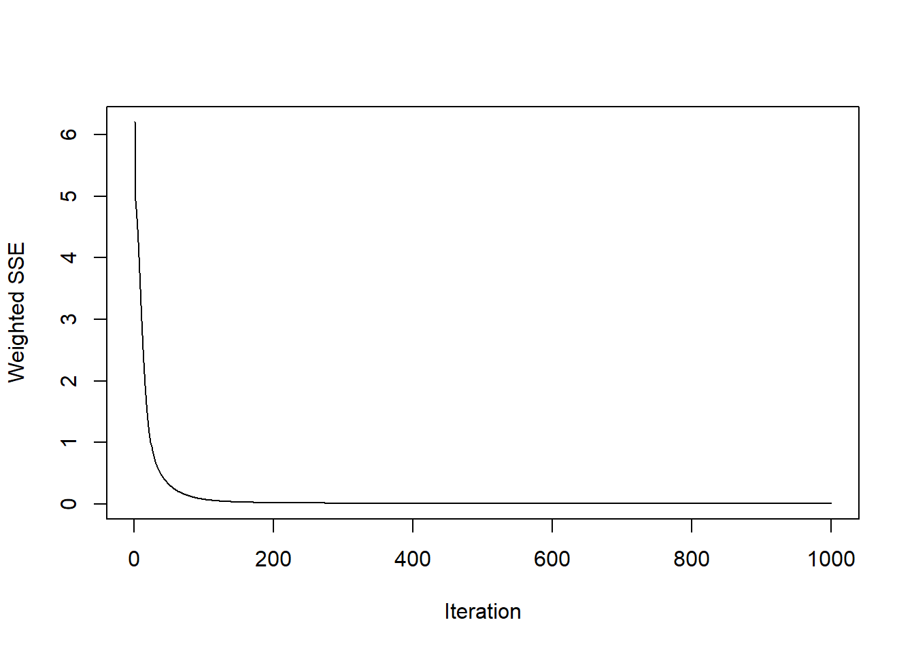
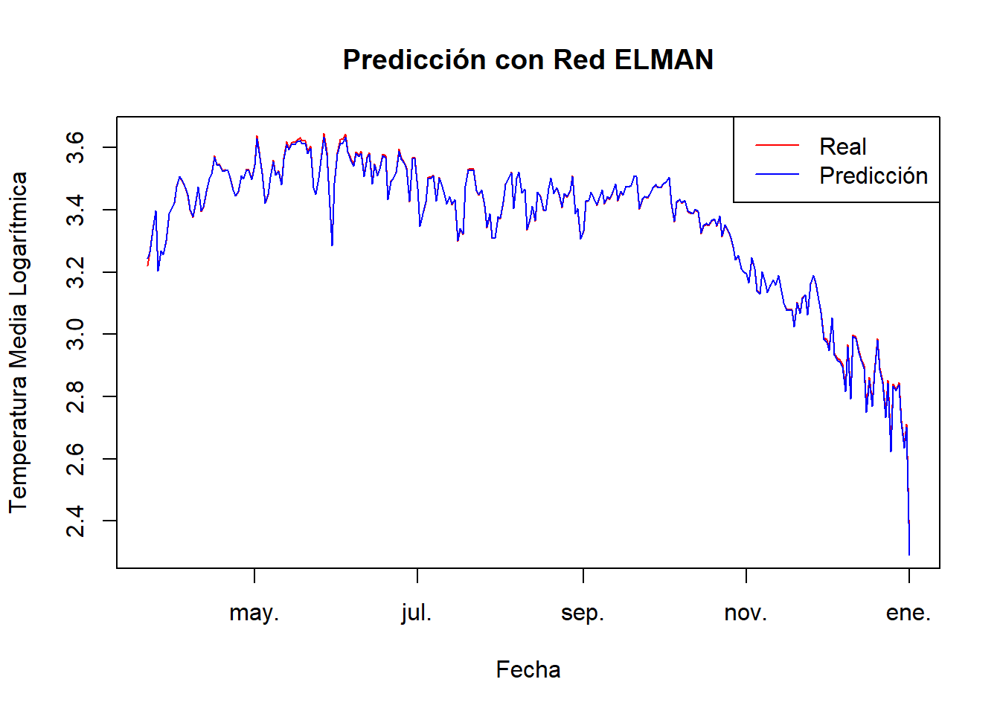
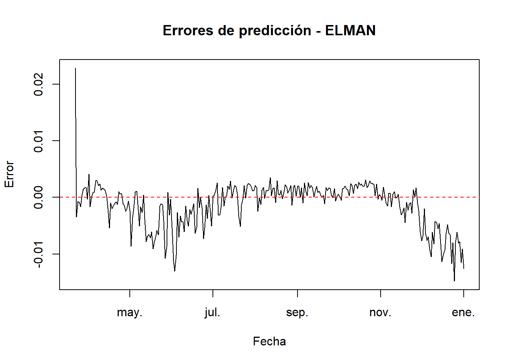
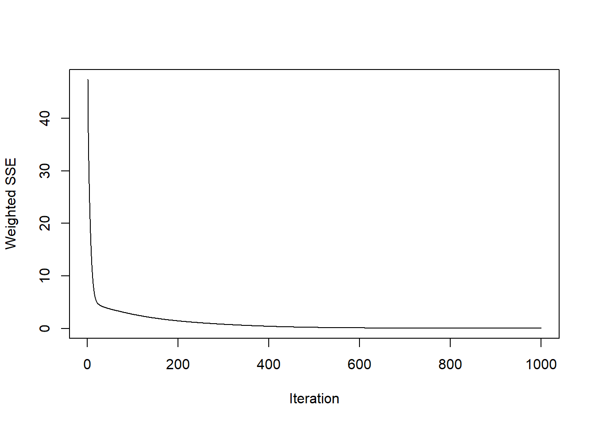
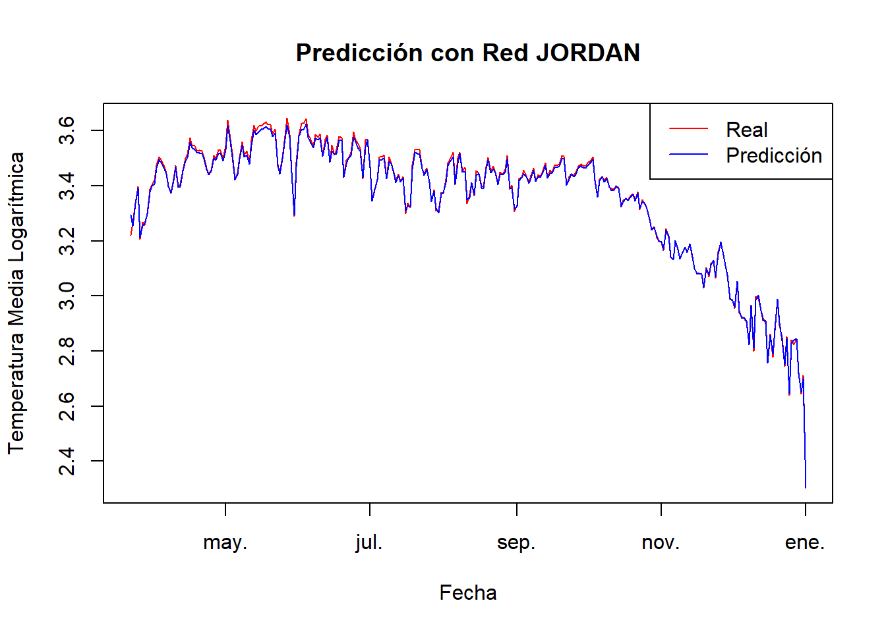
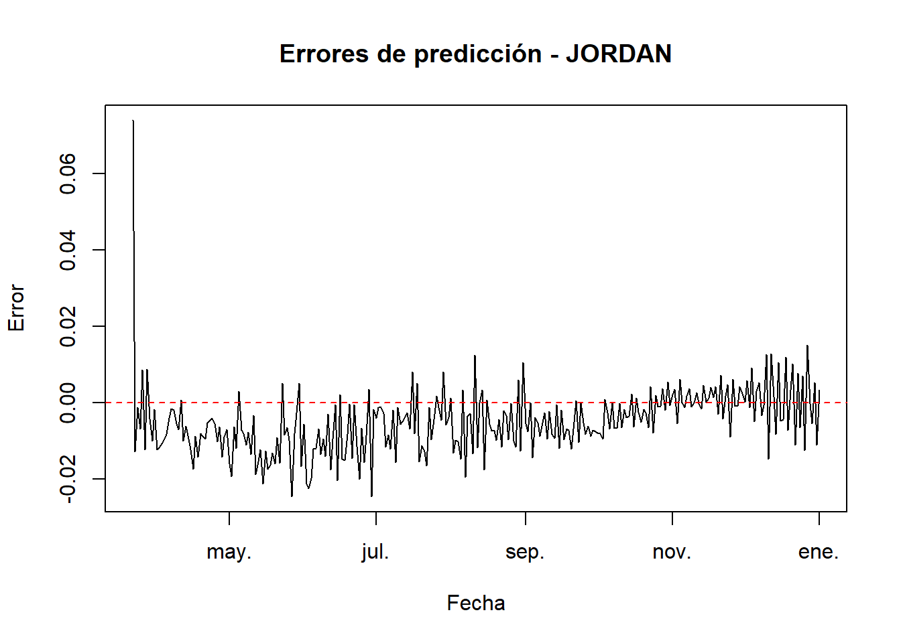

Chapter 8 Modulo 3
8.1 Organización datos
# Instalar y cargar librerías necesarias
if (!require(RSNNS)) install.packages("RSNNS", repos = "http://cran.us.r-project.org")## Loading required package: RSNNS## Warning: package 'RSNNS' was built under R version 4.2.3if (!require(tidyverse)) install.packages("tidyverse", repos = "http://cran.us.r-project.org")
library(RSNNS)
library(tidyverse)
# Cargar y preparar datos
ruta <- "C:/Users/Diego Ortiz/OneDrive/Documentos/Series de tiempo/Series1/ST1/DailyDelhiClimateTrain.csv"
data <- read.csv(ruta) %>%
mutate(date = as.Date(date),
log_meantemp = log(meantemp)) %>%
select(date, meantemp, log_meantemp)
# Escalar los datos
max_value <- max(data$log_meantemp, na.rm = TRUE)
min_value <- min(data$log_meantemp, na.rm = TRUE)
data$scaled_log_meantemp <- (data$log_meantemp - min_value) / (max_value - min_value)
# Crear conjuntos de entrenamiento y prueba
train_size <- round(nrow(data) * 0.8)
train_data <- data[1:train_size, ]
test_data <- data[(train_size + 1):nrow(data), ]
# Función para crear secuencias
create_sequences <- function(x, n_steps) {
x_mat <- matrix(NA, nrow = length(x) - n_steps + 1, ncol = n_steps)
for (i in 1:(length(x) - n_steps + 1)) {
x_mat[i,] <- x[i:(i + n_steps - 1)]
}
return(x_mat)
}
n_steps <- 7
input_train <- create_sequences(train_data$scaled_log_meantemp, n_steps)
output_train <- train_data$scaled_log_meantemp[n_steps:length(train_data$scaled_log_meantemp)]
input_test <- create_sequences(test_data$scaled_log_meantemp, n_steps)# Función para entrenar, predecir y evaluar modelos
train_predict_evaluate <- function(model_type, input_train, output_train, input_test) {
set.seed(123)
if (model_type == "elman") {
model <- elman(input_train, output_train, size = c(10, 5), learnFuncParams = c(0.1), maxit = 1000, linOut = TRUE)
} else if (model_type == "jordan") {
model <- jordan(input_train, output_train, size = 4, learnFuncParams = c(0.01), maxit = 1000, linOut = TRUE)
}
# Gráfico de convergencia del error
plotIterativeError(model)
predictions <- predict(model, input_test)
predictions <- predictions * (max_value - min_value) + min_value
actual_values <- test_data$log_meantemp[n_steps:length(test_data$log_meantemp)]
rmse <- sqrt(mean((predictions - actual_values)^2))
mae <- mean(abs(predictions - actual_values))
mape <- mean(abs((predictions - actual_values) / actual_values)) * 100
cat(toupper(model_type), "RMSE:", rmse, "\n")
cat(toupper(model_type), "MAE:", mae, "\n")
cat(toupper(model_type), "MAPE:", mape, "%\n")
# Visualizar resultados
plot(test_data$date[n_steps:length(test_data$date)], actual_values, type = "l", col = "red",
main = paste("Predicción con Red", toupper(model_type)), xlab = "Fecha", ylab = "Temperatura Media Logarítmica")
lines(test_data$date[n_steps:length(test_data$date)], predictions, col = "blue")
legend("topright", legend = c("Real", "Predicción"), col = c("red", "blue"), lty = 1)
# Gráfico de errores
errors <- predictions - actual_values
plot(test_data$date[n_steps:length(test_data$date)], errors, type = "l",
main = paste("Errores de predicción -", toupper(model_type)), xlab = "Fecha", ylab = "Error")
abline(h = 0, col = "red", lty = 2)
return(model)
}RESUL
# Ejecutar modelos
elman_model <- train_predict_evaluate("elman", input_train, output_train, input_test)
## ELMAN RMSE: 0.004209174
## ELMAN MAE: 0.00288991
## ELMAN MAPE: 0.08955447 %

## JORDAN RMSE: 0.01002777
## JORDAN MAE: 0.007558923
## JORDAN MAPE: 0.2231786 %